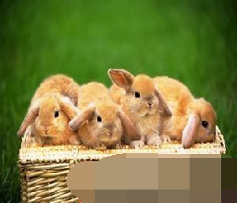
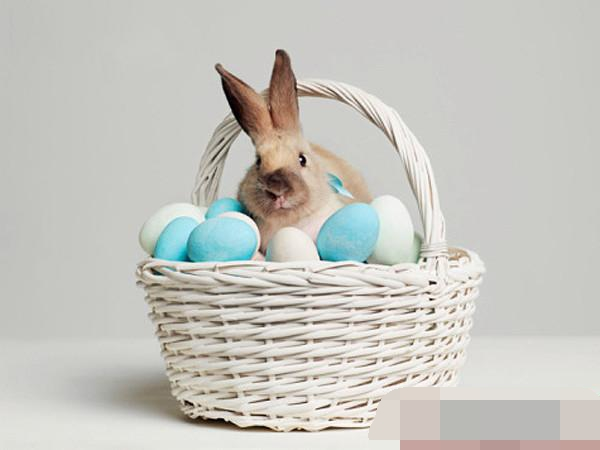

十一月兔事与兔病防治
本月是立冬、小雪两个节气到来的时间，标志着冬季开始了。虽然初冬的气候不是很冷，但是中午与早晚的温差大，
兔子易感冒和患病。
一、御寒要早搞
由于温差大和随时有寒流侵袭，兔舍必须及早采取保暖御寒措施，不能等真正冷了才进行。虽然兔子有一定的御寒能力，但在气温突然下降到5℃以下时，兔子就会不适应，极易生病。再说，我们养兔子就是要盈利，就是要用最少的成本换取最多的价值，而兔子为了御寒，就将吃下去的饲料转换成更多的热能来维持体温，用于长肉、长皮、长毛的营养就会减少，经济上不划算。因此，我们要及早堵好兔舍北墙的风洞，窗户用塑料薄膜钉实封闭，只留南面的窗户开启。对开放式的钟楼兔舍，要在两边披上薄膜或彩条布，晚上放下，早上卷起，有寒流天气时则全天放下。
从本月起，应增加兔子每天的饲料量，最好比秋季多五分之一的量，并在晚间九时左右加喂。本月可割黑麦草第一刀，注意开始饲喂时要**，每只兔不要超过200克，避免引起拉稀。
二、育好仔幼兔
本月后代兔参差不齐，早配的母兔所产仔兔已断奶，由于公兔**问题造成母兔第一次不受胎，以后又重新交配而受胎的，本月正产仔，因此本月提高仔兔、幼兔的成活率的任务非常重。
首先要保证仔兔吃足初乳，要经常检查产仔箱和兔窝，有无仔兔爬出。如有这种情况，要及时抢救。仔兔身上已冷、不动弹的，应该用40℃的温水，将其身子放入，拎着兔头露在水外；或放在人体怀内捂热，5分钟后仔兔动弹，则可救。对同时分娩或前后不超过3天的母兔，所产仔兔的数量差异很大，要及时做好寄养或人工哺乳工作。
仔兔12天开眼，如有被眼屎糊住的现象，可用氯霉素眼药水或淡盐水滴在眼上，10分钟后再滴一次，然后用手指轻轻将上、下眼皮拨开，切不可在眼屎干时硬拨，造成损伤，甚至瞎眼。
仔兔15至18天开食，此时喂炒焦的大麦或小麦粒，或用奶粉拌麸皮(湿拌料)诱饲，仔兔满月后可以将大兔料掺合饲喂，并逐步断奶。
断奶的方法宜逐步进行：先将母兔在白天与仔兔分开(母兔捉出，仔兔留原笼)，至晚上回仔兔笼；5至7天后再彻底分开。
饲喂幼兔要少喂勤添，料中拌一些大葱、韭菜、大蒜等，提高幼兔对疾病的抵抗力，幼兔食盆要长条形，让它们同时吃到料，避免以强欺弱，饥饱不均。要经常检查并清洗食盆，保持卫生。
三、防治三种病
本月常会气候突变，易使家兔感冒、发生A型魏氏梭菌下痢病和疥癣病，必须重视防治。
1、感冒
凡在本月内发现兔子不吃食、眼无神、流泪、流鼻涕的，均可作感冒治疗。常用复方氨基比林注射液，肌肉注射2毫升，每天2次，或**注射液，肌肉注射1毫升，每天2次，连用3天；同时内服复方新诺明片，每次1粒，每天2次，连用3天。如发现兔子咳嗽，呼吸困难，则可作肺炎治疗：使用青霉素20万单位(幼兔减半)，肌肉注射，每天2次，连用5天。
2、A型魏氏梭菌下痢病
从笔者了解的农户防疫情况看，大家对兔瘟病的防疫较重视，常用单苗或兔瘟巴氏二联苗注射，但对A型魏氏梭菌下痢病重视不够。这个病是由A型魏氏梭菌产生的外毒素发病的，抗菌素只能杀死A型魏氏梭菌，而不能清除或中和外毒素，因此，一旦发生此病，若无血清注射，则很难治疗，因此重在预防。
3、疥癣病
进入冬季，家兔最容易发生此病，我们必须防患于未然。本月应将整个兔群用2%敌百虫溶液或将一支双甲醚对2.5公斤水清洗脚爪，并用上述药液再将兔耳内廓擦洗一下，此为全群预防。对于已经感染此病，兔爪上有痂块，兔耳内有痂皮的病兔，除了清洗去痂外，还必须用灭虫丁注射液皮下注射，每只兔按活兔体重每公斤注射0.2毫升，每天一次，连用3天，停药两天，再注射两天可彻底治愈；或用依维菌素注射液皮下注射，仍按兔体重每公斤注射0.2毫升，间隔7天后再注射一次。
(江苏扬州兔业协会刘同秋)
夏季繁育兔兔需要注意的事项

1、采用晚、稀、少繁殖方法。母兔配种须等到母兔产仔满月体质基本恢复时进行，配种时间最好在清晨或夜晚温度较低时。带仔数不宜过多，存养仔兔应控制在6—7头。
2、产箱中一般不用垫草褥，如需垫草，一薄层即可。在母兔分娩后把母兔扯下的毛拿走，仅留少量部分用于垫窝，以防仔兔中暑。同时应在产箱周围喷水，以降低仔兔周围的温度。
3、产后母兔除正常饲喂外，每天加喂少量盐水、米汤、麸皮，并注意供给充足的清水。
4、适当延长仔兔的哺乳期。当仔兔能觅食时将产箱清扫干净并消毒，在产箱内放入少量鲜嫩青草。仔兔25日龄时可撤掉产箱，放入兔笼与大兔共食。
5、母兔产后及时投喂一些磺胺类，抗菌素类药物，仔兔与母兔共食后在饲料中拌入兔球灵、土霉素，起到驱虫杀菌的作用。
6、可饲喂西瓜皮等清凉解暑饲料，露水草、泥水草要洗净晒干，以防寄生虫卵感染。
7、疾病的预防。兔舍应定期消毒，室内潮湿时可在地面上撒些生石灰粉。白天应开窗通风，保持舍内空气洁净。以15天作为一个疗程投喂土霉素、敌菌净和球虫灵。对兔笼进行消毒时采用火焰消毒法。当仔兔4—5日龄时应及时接种兔瘟等疫苗。
钢琴兔宠物兔粮算好兔粮吗

钢琴兔兔粮是日本制造的一款进口宠物兔 粮，所以相对来说价格会稍微高一些。不过这款兔粮在国内有着一定的受众面，而且使用的饲主大多给出了较好的评价。更主要的是兔子对这一兔粮有着很大的兴趣，很少会出现挑食的问题。
钢琴兔兔粮针对不同的兔子都推出了相应的兔粮，如果是成年兔或者是有肥胖问题的兔子可以食用提摩西除臭兔粮，这一兔粮主要是以提牧西牧草为制作原料，含有高纤维、低蛋白、低卡路里，在提供营养的同时也能有效地改善肥胖问题，每千克体重的兔子食用40-50g兔粮，一天喂2次，同时这一兔粮有着独特除臭配方，食用后能够有效地改善这一问题。
此外这一兔粮还有以下特点，整肠, 强化消化系统健康;葡萄糖铵基酸且添加药草低磷低钙;低脂适合减肥或过胖兔子;添保健药草消臭成份(含尿液消臭成份);低热量配方让宠兔更加健康活力;有着很好的适口性，大多数兔子对于这一兔粮都比较喜欢;颗粒大小适中易于取食;兼顾磨牙洁齿功效;含独特的除臭配方，并有效预防泌尿系统疾病;且有效调理消化系统机能。
总的来说，大多数养兔饲主对于钢琴兔宠物兔粮有着较好的评价。不过因为是进口产品，所以一定要注意购买渠道，避免买到假货。